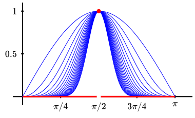

\(\displaystyle \lim_{ n \to \infty } a_n = a
\Longrightarrow \lim_{ n \to \infty } |a_n| = |a|\text{.}\)
\(\displaystyle \lim_{ n \to \infty } a_n = 0
\Longleftrightarrow \lim_{ n \to \infty } |a_n| =
0\text{.}\)
6.
Show that a convergent sequence is bounded, i.e.: if \(\lim_{ n \to \infty } a_n\) exists, then there is an \(M\) such that \(|a_n| \le M\) for all \(n \ge 1\text{.}\)
7.
Show that the limit of a convergent sequence is unique.
8.
Let \((a_n)\) be a sequence. A point \(a\) is an accumulation point of the sequence if for every \(\epsilon > 0\) and every \(N \in \Z_{ >0 }\) there exists some \(n > N\) such that \(|a_n - a| \lt \epsilon\text{.}\) Prove that if a sequence has more than one accumulation point then the sequence diverges.
9.
Show that \(\frac 1 {k!} \le \frac 3 {k(k+1)}\) for any positive integer \(k\text{.}\)
Conclude with Example 7.2.3 that for any positive integer \(n\text{,}\)
Prove that \(\left( c_n \right)\) converges if and only if \(\left( \Re c_n \right)\) and \(\left( \Im c_n
\right)\) converge.
13.
Prove that \(\Z\) is complete and that \(\Q\) is not complete.
14.
Prove that, if \(a_n \leq b_n \leq c_n\) for all \(n\) and \(\lim_{n \to \infty} a_n = \lim_{n \to \infty} c_n =
L\text{,}\) then \(\lim_{n \to \infty} b_n = L\text{.}\) This is called the Squeeze Theorem, and is useful in testing a sequence for convergence.
15.
Find the least upper bound of the set \(\left\{ \Re \left(
e^{2 \pi i t} \right) : \, t \in \Q \setminus \Z
\right\}\text{.}\)
16.
Suppose that the sequence \((c_n)\) converges to zero. Show that \(\sum_{n \ge 0} c_n\) converges if and only if \(\sum_{k \ge 0} (c_{2k}+c_{2k+1})\) converges. Moreover, if the two series converge then they have the same limit.
Give an example where \((c_n)\) does not converge to \(0\) and one of the series in (a) diverges while the other converges.
17.
Prove that the series \(\ds \sum_{k \geq 1} b_k\) converges if and only if \(\ds \lim_{n \to \infty} \sum_{k \ge n} b_k =
0 \, \text{.}\)
18.
Show that \(\ds \sum_{k \geq 1} \frac k {k^2+1}\) diverges.
Show that \(\ds \sum_{k \geq 1} \frac k {k^3+1}\) converges.
19.
Suppose \(G\subseteq\C\) and \(f_n : G \to \C\) for \(n \ge 1\text{.}\) Suppose \((a_n)\) is a sequence in \(\R\) with \(\lim_{ n \to \infty } a_n = 0\) and, for each \(n \ge 1\text{,}\)
\begin{equation*}
|f_n(z)| \ \le \ a_n \qquad \text{ for all } z \in G \,\text{.}
\end{equation*}
Show that \((f_n)\) converges uniformly to the zero function in \(G\text{.}\)
Re-prove the statement of Example 7.3.3 using part a).
20.
Suppose \(G\subseteq\C\text{,}\)\(f_n : G \to \C\) for \(n \ge 1\text{,}\) and \((f_n)\) converges uniformly to the zero function in \(G\text{.}\) Show that, if \((z_n)\) is any sequence in \(G\text{,}\) then
Apply a) to the function sequence given in Example 7.3.2, together with the sequence \((z_n = e^{ - \frac 1 n })\text{,}\) to prove that the convergence given in Example 7.3.2 is not uniform.
21.
Consider \(f_n : [0,\pi] \to \R\) given by \(f_n(x) =
\sin^n(x)\text{,}\) for \(n \ge 1\text{.}\) Prove that \((f_n)\) converges pointwise to \(f: [0,\pi]
\to \R\) given by
\begin{equation*}
f(x) = \begin{cases}1 \amp \text{ if } x = \frac \pi 2 \,
, \\ 0 \amp \text{ if } x \ne \frac \pi 2 \, , \end{cases}
\end{equation*}
yet this convergence is not uniform. (See Figure 7.5.1.)

Figure7.5.1.The functions \(f_n(x) := \sin^n(x)\) in Exercise 7.5.21.
22.
Where do the following sequences converge pointwise? Do they converge uniformly on this domain?
\(\displaystyle \left( n \, z^n \right)\)
\(\displaystyle \left( \frac{ z^n }{n} \right)\)
\(\left( \frac 1 {1+nz} \right)\) where \(\Re(z) \geq 0\)
23.
Let \(f_n(x)=n^2x \, e^{-nx}\text{.}\)
Show that \(\lim_{n\to\infty}f_n(x)=0\) for all \(x\ge0\text{.}\) (Hint: Treat \(x=0\) as a special case; for \(x>0\) you can use L’Hôpital’s rule (Theorem A.0.11) — but remember that \(n\) is the variable, not \(x\text{.}\))
Find \(\lim_{n\to\infty}\int_0^1 f_n(x)\,\diff{x}\text{.}\) (Hint: The answer is not\(0\text{.}\))
The product of two power series centered at \(z_0\) is another power series centered at \(z_0\text{.}\) Derive a formula for its coefficients in terms of the coefficients of the original two power series.
25.
Find a power series (and determine its radius of convergence) for the following functions.
\(\displaystyle \ds \frac{ 1 }{ 1 + 4 z }\)
\(\displaystyle \ds \frac{ 1 }{ 3 - \frac z 2 }\)
\(\displaystyle \ds \frac{z^2}{(4-z)^2}\)
26.
Find a power series representation about the origin of each of the following functions.
\(\displaystyle \cos z\)
\(\displaystyle \cos(z^2)\)
\(\displaystyle z^2\sin z\)
\(\displaystyle (\sin z)^2\)
27.
Suppose that the sequence \((c_k)\) is bounded. Show that the radius of convergence of \(\sum_{k\ge0}c_k(z-z_0)^k\) is at least \(1\text{.}\)
Suppose that the sequence \((c_k)\) does not converge to \(0\text{.}\) Show that the radius of convergence of \(\sum_{k\ge0}c_k(z-z_0)^k\) is at most \(1\text{.}\)
28.
Find the power series centered at 1 and compute its radius of convergence for each of the following functions:
\(\displaystyle f(z)= \frac 1 z\)
\(\displaystyle f(z)=\Log (z)\)
29.
Use the Weierstraß \(M\)-test to show that each of the following series converges uniformly on the given domain:
\(\displaystyle \sum_{k\ge1}\frac{z^k}{k^2}\) on \(\overline D[0,1]\)
\(\displaystyle \sum_{k\ge0}\frac1{z^k}\) on \(\{ z \in \C
: \, \abs{z}\ge2 \}\)
\(\displaystyle \sum_{k\ge0}\frac{z^k}{z^k+1}\) on \(\displaystyle \overline D[0,r]\) where \(0\le r\lt
1\)
30.
Fix \(z \in \C\) and \(r > |z|\text{.}\) Prove that \(\ds \s \left( \frac z w \right)^k\) converges uniformly in the variable\(w\) for \(|w| \ge r\text{.}\)
31.
Complete our proof of Corollary 7.4.6 by considering the case \(R = \infty\text{.}\)
32.
Prove that, if \(\lim_{ k \to \infty } \left| \frac{ c_{ k+1
} }{ c_{ k } } \right|\) exists then the radius of convergence of \(\s c_k ( z - z_0)^k\) equals
\begin{equation*}
R = \begin{cases}\infty \amp \text{ if } \lim_{ k \to
\infty } \left| \frac{ c_{ k+1 } }{ c_{ k } } \right| = 0 \,
, \\ \lim_{ k \to \infty } \left| \frac{ c_{ k } }{ c_{ k+1
} } \right| \amp \text{ otherwise. } \end{cases}
\end{equation*}
33.
Find the radius of convergence for each of the following series.